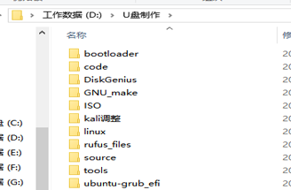
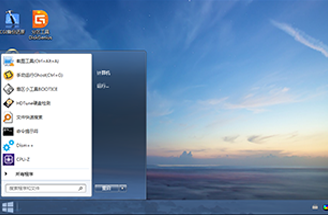

相关下载

PE与镜像定制

可定制PE系统
PE纯化，可进行PE定制，针对特定的使用情景调整PE的功能和默认安装的软件，让PE个性化同时满足特定业务需求。

封装系统镜像
独立制作操作系统镜像，可用发行特定系统，也可用于备件和重装系统，免去新装系统的配置问题。
软件与广告植入
不管是PE还是系统的镜像文件，可在其中绑定要安装的软件与网页广告植入，根据自己身的业务需求生成不同的PE与镜像。
PE纯化，可进行PE定制，针对特定的使用情景调整PE的功能和默认安装的软件，让PE个性化同时满足特定业务需求。
独立制作操作系统镜像，可用发行特定系统，也可用于备件和重装系统，免去新装系统的配置问题。
不管是PE还是系统的镜像文件，可在其中绑定要安装的软件与网页广告植入，根据自己身的业务需求生成不同的PE与镜像。